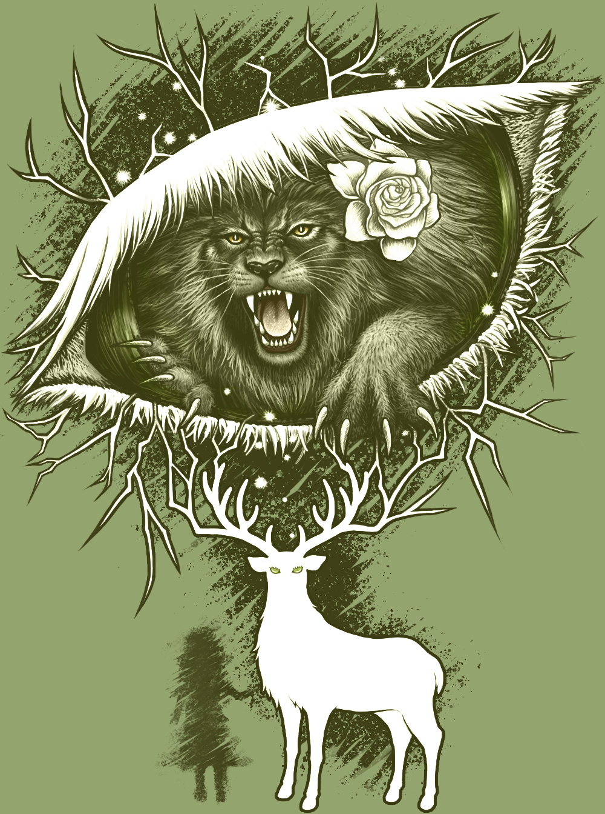
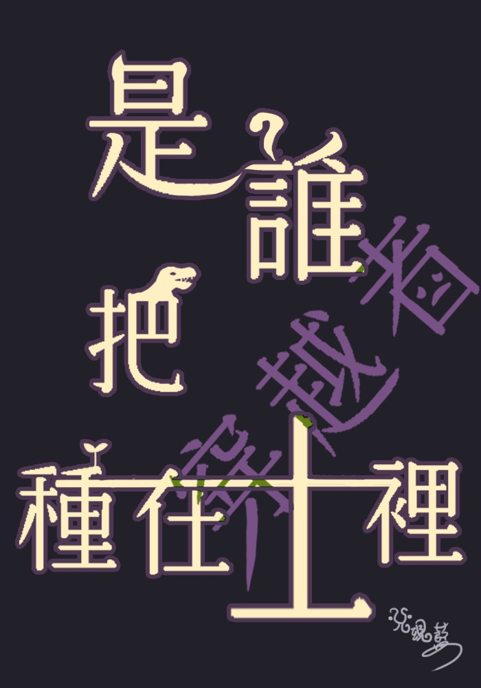

兌現藍
STORY-COMMAND SHAPES REALITY.
NOVEL: Story-Command Awakening
「因為是文閉所以會贏。」「冠軍是我們的，你們加油吧。」
[系統提示] 偵測到高濃度迷因與校園奇幻反應，創作即魔法。
🧪 創作者屬性鑑定 (心理測驗)
開始測驗NOVEL: 《咬了神一口》
「改編自美女與野獸。山上有座不能亂碰的莊園，摘花要付出代價，說謊也有代價。」
咬了神一口
A Bite of God · Beauty & the Beast retelling
山上有座不能亂碰的莊園。
摘花要付出代價，說謊也有代價。
黎昂只是想把弟弟帶回家。
但他從來不是會乖乖服從規則的獅子。
於是，他咬了神一口。
或許還不只一口。
購書連結 — 即將上線

🌿 黑暗特質 BL 心理測驗
測測你的黑暗特質NOVEL：REVISING (修文施工中)

是誰把穿越者種在土裡
[系統提示] 恐龍注意！
「17歲的蘇海躍選擇結束生命，卻在陌生山林的泥土裡被挖了出來。」
一個人類分為 ABO、幽靈依附費洛蒙、恐龍遊蕩於街頭的瘋狂世界。蘇海躍在這個怪異卻溫暖的日常中，遇見了蒼白如鬼的 Alpha 陸翎邑。新聞上另一個「完美的蘇海躍」失蹤案，揭開了橫跨兩個世界的巨大陰謀。
前往 KadoKadoGAME: 恐怖民俗RPG遊戲
【系統警告】包含大量紅色顏料與精神污染（開玩笑的，但也許不是）。